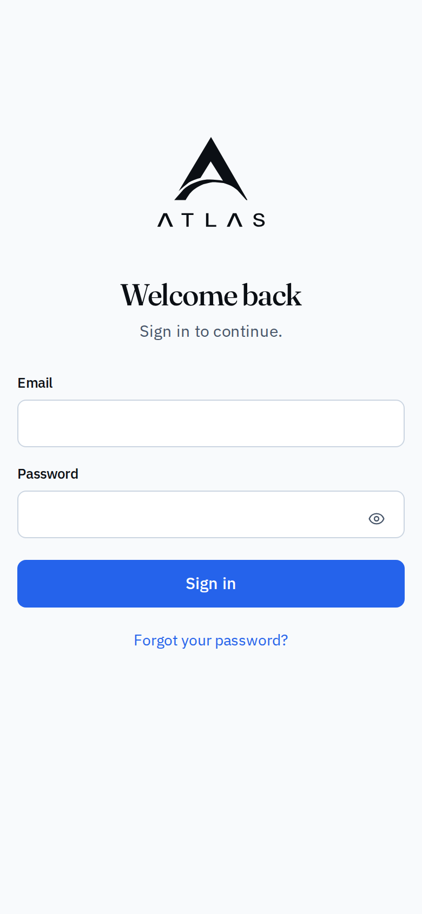
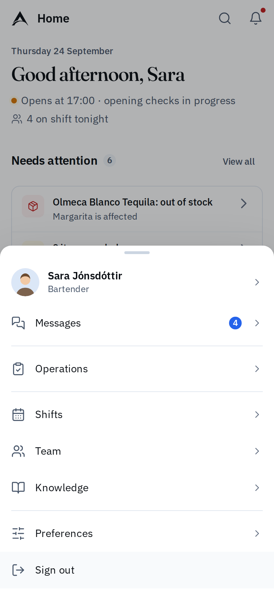
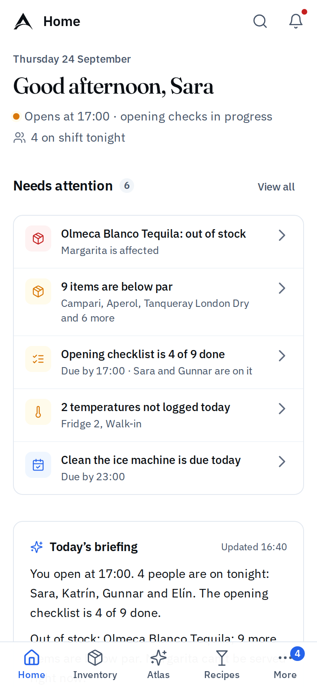
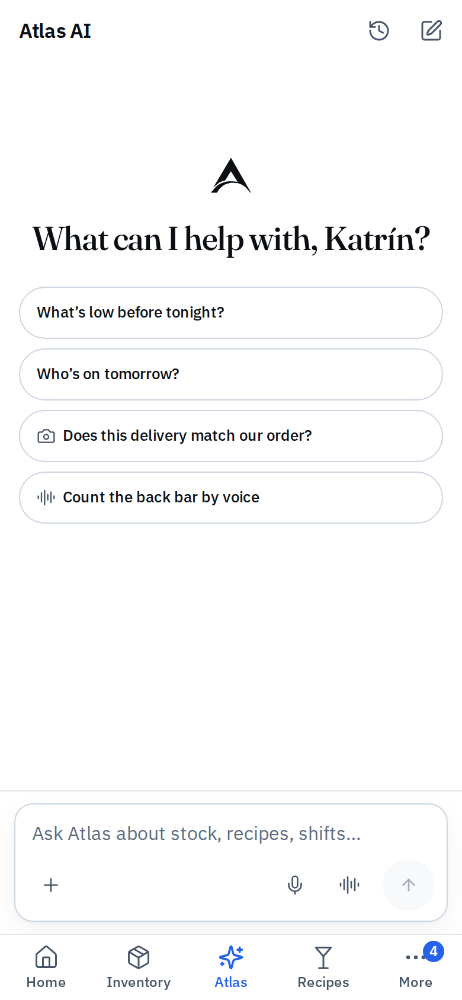
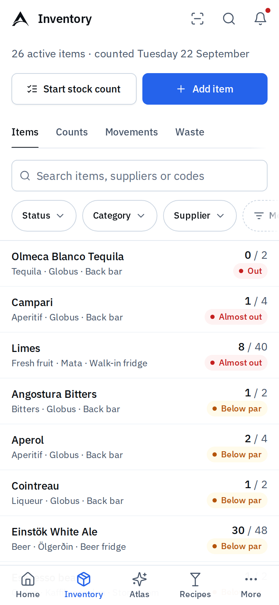
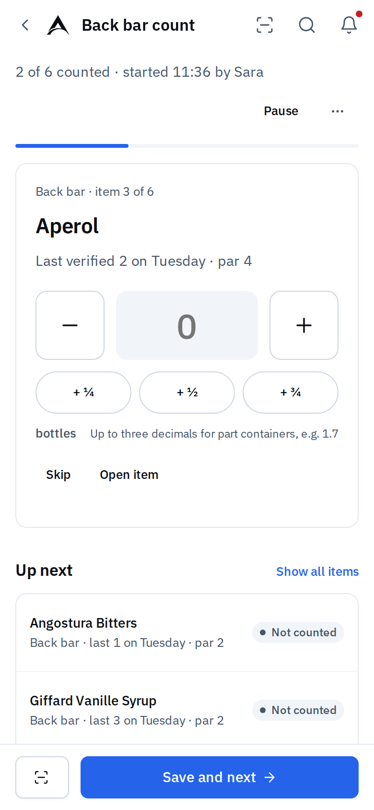

Chapter 1
Welcome to Atlas
Atlas is where your venue keeps its stock, recipes, checklists, shifts and team messages, and where you can ask Atlas AI about any of it.
This short guide covers what you need on your first shift. The full Atlas User Guide explains every page in detail.
What you see in Atlas depends on your role: Administrator, Manager, Bartender or Viewer. If a page in this guide is missing for you, it is for another role.
Signing in
- Open Atlas in your browser, on a phone, tablet or computer.
- Enter your Email and Password and press Sign in.
- Forgot your password? Press Forgot your password? and follow the link sent to your email. Open it on the same device.
Your manager gives you access in one of two ways:
- A setup link. Open it, choose a password of at least 10 characters, and press Create login.
- An email invitation. Set your password from the email. Then your manager turns on your Atlas access. Until they do, sign-in tells you to ask an administrator to review your access.
Signing out with Sign out signs you out of this device only.
Getting around
On a computer, the sidebar on the left holds every page you can use, grouped as Venue (Operations, Inventory, Recipes, Purchasing), People (Shifts, Team, Knowledge) and Business (Reports, Marketing, Data). Your name at the bottom opens your account menu.
On a phone, the tab bar at the bottom has Home, Inventory, Atlas, Recipes and More. More opens everything else, your preferences and Sign out.
Everywhere, the top bar has:
- Search or ask Atlas: type the name of an item, recipe or person, or ask a question. On a computer press Ctrl K (⌘K on a Mac).
- The bell : what changed and what needs you. Tap an item to go straight there.

PhoneSign in with your email and password.

PhoneOn a phone, More lists the other pages your role can use.
Home
Home answers one question: is today under control, and what needs me?
- The line under the greeting shows when you open or close, how the opening checklist is going and how many are on shift tonight.
- Needs attention lists what to act on first, such as an item out of stock or a temperature not logged. Each row has a button that takes you there.
- Today's briefing sums up the day in a sentence or two, from real records only. Press Ask a follow-up to ask Atlas AI more.
- Tonight shows who is on shift.
- The Opening checklist button, or Closing checklist after last orders, opens today's checklist.
Tick each checklist item as you do it. Atlas saves your name and the time straight away, and everyone sees the same list.
Recommended morning routine
A calm start to the day
-
Open Home
Read the status line: are you on time for opening, and who is on tonight?
-
Clear Needs attention
Work top to bottom. Each row's button takes you to the right place.
-
Read Today's briefing
Press Ask a follow-up if you want detail, for example what to order.
-
Run the opening checklist
Press Opening checklist and tick items as they're done. Your name and the time are saved.
-
Log fridge temperatures
Use Log reading for any point not logged today.
-
Check Messages
Read the Shift handover from last night and any Announcements.
-
Managers: check stock and orders
Receive deliveries that are due and review any orders or counts waiting for you.
Atlas AI
Ask Atlas about your venue in plain language. It answers from your venue's records, and only from what your role may see. Tap Atlas on the phone tab bar, or Atlas AI in the sidebar.
Try asking
“What's low before tonight?”
Checks verified stock against par levels.
“Who's on tomorrow?”
Reads the published schedule.
“Which recipes can't we make tonight?”
Checks recipes against stock.
“What does our closing procedure say about the ice well?”
Searches Knowledge.
- Type, talk or add a photo. The mic records a voice note; Talk to Atlas starts a live voice conversation; + attaches a photo or file.
- Check the sources. Under each answer, How Atlas knows lists the records Atlas used.
- Approve with a tap. When Atlas can help with a change, such as saving a count or sending a message, it prepares a card. Nothing happens until someone with the right role taps the button on it. Saying or typing "yes" is not an approval.
Atlas never changes stock, orders or shifts on its own, never invents numbers, and never sends anything to suppliers.

PhoneHome on a bartender's phone: what needs doing tonight comes first.

PhoneAtlas AI: start with a suggestion or type your own question.
Inventory
Inventory lists every item the bar stocks, with its stock and status. Tap an item to see where it is kept, its par level and the recipes that use it.
| Status | What it means |
|---|---|
| In stock | Enough on hand |
| Below par | Under the quantity you want after a delivery |
| Almost out | A quarter of par or less |
| Out | A verified count of zero |
| Not counted | No current count. Atlas doesn't know how many there are. It is not out of stock |
Stock figures come from the last verified count plus the deliveries, waste and other movements recorded since.

PhoneInventory on a phone, with stock and status for each item.

PhoneCounting one item at a time. Save and next moves on.
Counting stock
Bartenders and managers can count.
- In Inventory, press Start stock count.
- Choose Full count, an area or a category, and press Start count.
- For each item, enter what is on the shelf. Use + ½ and the other part chips for open bottles. Press Save and next.
- Can't reach something? Press Skip and give a reason.
- Need to stop? Press Pause. You or a colleague can continue on any device.
- When every item is counted or skipped, press Finish count, then Submit for verification.
A manager then checks the differences and presses Verify count. Only then does the count become the stock Atlas shows.
Purchasing
Available to Administrator Manager
Purchasing is for managers. It holds orders, deliveries and suppliers.
- Order. On the Orders tab, press Review suggestions to see items below par grouped by supplier, then Create N orders. Or press New order.
- Send it yourself. Atlas doesn't send orders to suppliers. Send the order as you usually do, then press Mark as ordered.
- Receive. When the delivery arrives, open the order and press Receive delivery. Check each line, mark anything Short or Damaged, and press Receive X of Y lines. Stock goes up straight away.
If you are a bartender and a delivery arrives, let a manager know.
Messages
Messages are the team's shared channels: General, Operations, Shift handover, Announcements and Marketing. Everyone in a channel sees what is posted there.
- Type your message and press Send. Use the paperclip, Link a record, to attach an item, checklist or shift.
- Your own messages show Sent, then Read by N once colleagues have read them.
- You can edit or delete your own message within 15 minutes.
- At the end of your shift, open Shift handover and press Write handover. Fill in What happened, Stock issues and For the next shift, then Post handover.
Only managers post in Announcements. Viewers can read every channel but can't post.
Shifts
Shifts shows the published rota. Choose Mine for your own shifts or Team for everyone.
- When a week is published, press Confirm on each of your shifts, or Request change with a short note.
- On the Availability tab, set the days and times you can usually work, then press Save.
- On the Time off tab, press Request time off, choose the type and dates, and Send request. Your manager approves or declines it.
A week that isn't published yet shows no shifts.
Where to get help
- Ask Atlas AI. It can explain where to find things and answer questions about stock, recipes, shifts and procedures.
- Read Knowledge. Your venue's procedures and training live in Knowledge. Anything marked Required · not read is for you to read and confirm with Mark as read.
- Ask your manager about anything to do with your role, your shifts or your access.
Your name and photo. Open the account menu, choose Your profile and press Edit profile to set the Name shown in Atlas, the name your team sees in Messages and Shifts. Add photo adds your picture.
When something doesn't work
| What you see | What to do |
|---|---|
| "Email or password is incorrect." | Check both, or press Forgot your password? |
| A message that your account is not an active staff profile | Ask your manager to turn on your Atlas access. |
| "You're offline. Changes can't be saved until you reconnect." | Reconnect, then refresh. Redo anything that wasn't saved. |
| "That page is for managers." | The page is for another role. Ask a manager if you need it. |
| "Not counted" on an item | Nobody has a verified count yet. It is not out of stock. Count it. |
| "Atlas AI isn't switched on yet" | Quick answers from your records still work. Your administrator can switch Atlas AI on. |
If a message says "Nothing was changed", you can safely try again. If a problem continues, tell your venue's Atlas administrator what you were doing, the exact message and the time.